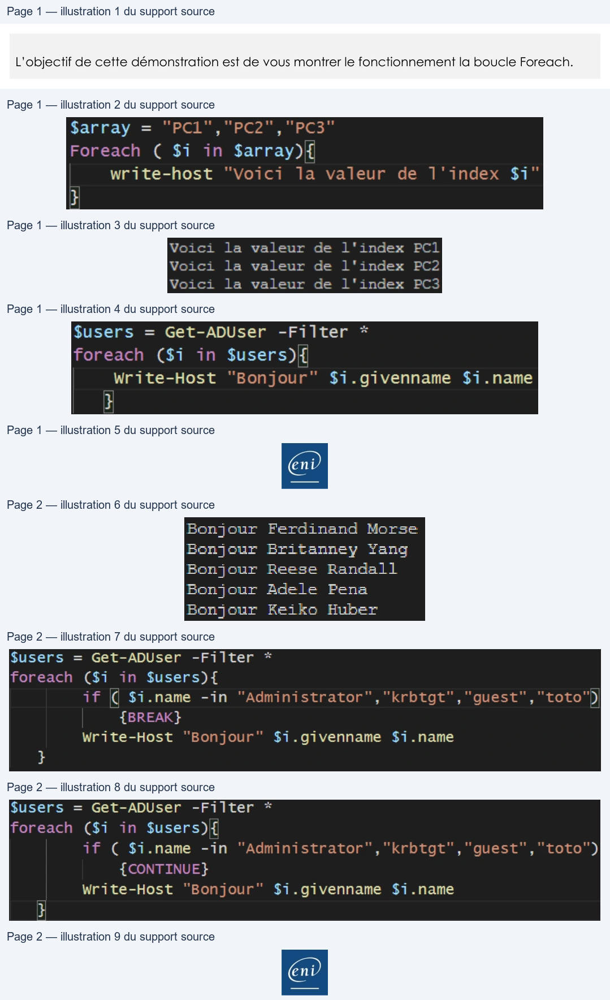

Transcription du document du Drive TSSR. La mise en forme est adaptée au Web ; les compléments IA du portail sont présentés séparément.
Initiation à PowerShell
Démonstration 07 du module 4
L’objectif de cette démonstration est de vous montrer le fonctionnement la boucle Foreach.
La boucle Foreach est la boucle qui s’utilise avec des variables de type Array et ArrayList.
En effet la boucle fonctionne avec un index qui va parcourir les variables et traiter les valeurs
contenues dans chaque index du tableau.
Le nombre de tours de boucle dépend du nombre de valeurs contenues dans la variable.
• La structure Foreach est employée pour exprimer les propriétés d’un ou de plusieurs objets contenus dans une variable.
• Reprenons l’exemple de la variable Array :
Trois index sont présents dans la variable $array donc trois tours de boucle.
A chaque tour de boucle, la valeur de l’index $i prend la valeur de l’index suivant dans le tableau.
Avec une variable de type ArrayList, nous allons explorer des objets.
Page 1/2
© ENI – Tous droits réservés
$array = "PCL","PC2","PC3"
Foreach
€
$i
in $array){
write-host
"Voici
la valeur
de
l'index $7"
}
Voici
la valeur de
l'index
PCI
Voici
la valeur de
l'index
PC2
Voici
la valeur de
l'index
PC3
$fusers = Get-ADUser
-Filter
*
foreach
($1
in
$users)i{
Write-Host “Bonjour” $i.givenname
$i.name
}
@
Initiation à PowerShell
A chaque tour de boucle, l’index contient un objet, ici un utilisateur Active Directory. On spécifie
les propriétés de l’objet avec le « . ».
La structure Foreach accepte des commandes « action ». Ces actions sont décidées la plupart du temps pour donner suite à un test venant d’une structure If.
Avec l’action BREAK la boucle s’arrête si elle détecte un des quatre comptes indiqués dans la condition du If.
Avec l’action CONTINUE la boucle continue sans traiter l’objet qui a répondu « Vrai » au test.
Page 2/2
© ENI – Tous droits réservés
Bonjour Ferdinand Morse
Bonjour Britanney Yang
Bonjour Reese Randall
Bonjour Adele Pena
Bonjour Keiko Huber
$users
= Get-ADUser
-Filter
*
foreach
($1
in
$users){
if
(( $i-name
-in
"Administrator",
"krbtgt", "guest", “toto")
{BREAK}
Write-Host
“Bonjour”
$i.givenname
$i.name
}
$users
= Get-ADUser
-Filter
*
foreach
($1
in
$users){
if
( $i.name -in "Administrator", "krbtgt", "guest", “toto")
{CONTINUE}
Write-Host
“Bonjour”
$i.givenname $i.name
}
